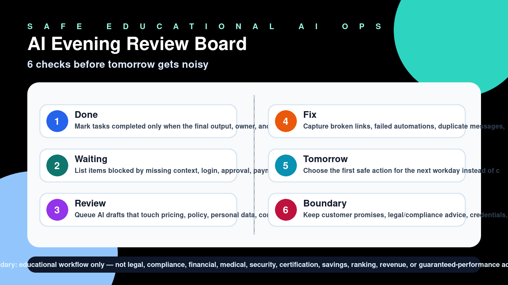

Evening publication · Safe AI operations
AI Evening Review Board: 6 checks before tomorrow gets noisy
A safe educational board for owners to close the day with clear AI task status, human handoffs, and risk boundaries before the next workday starts.

The six-check board
- Done: Mark tasks completed only when the final output, owner, and evidence link are visible.
- Waiting: List items blocked by missing context, login, approval, payment, or a named human decision.
- Review: Queue AI drafts that touch pricing, policy, personal data, commitments, or uncertain facts.
- Fix: Capture broken links, failed automations, duplicate messages, and confusing customer handoffs.
- Tomorrow: Choose the first safe action for the next workday instead of carrying a vague backlog.
- Boundary: Keep customer promises, legal/compliance advice, credentials, and identity-sensitive work human-owned.
Safe use boundary
This is an educational workflow checklist. It is not legal, compliance, medical, financial, security, certification, savings, ranking, revenue, or guaranteed-performance advice.